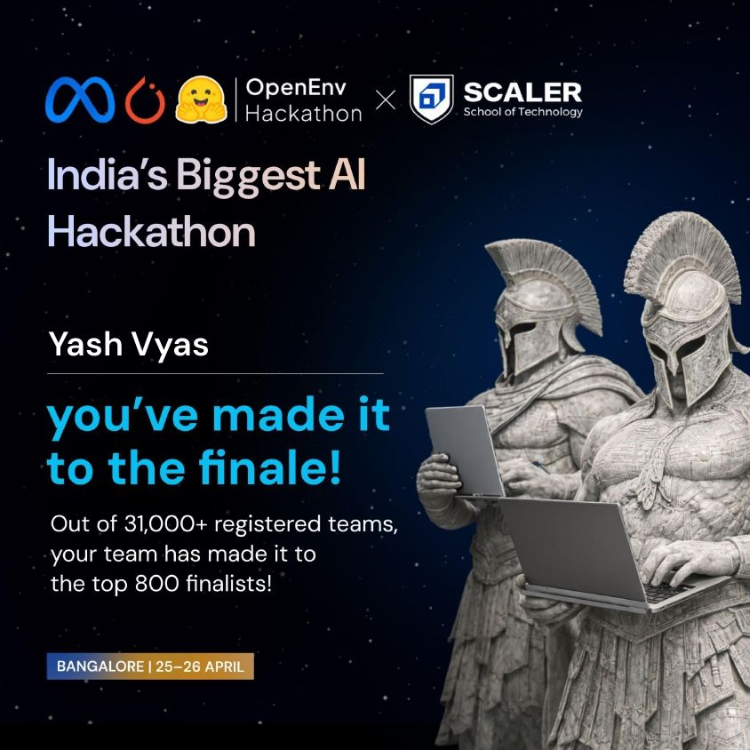
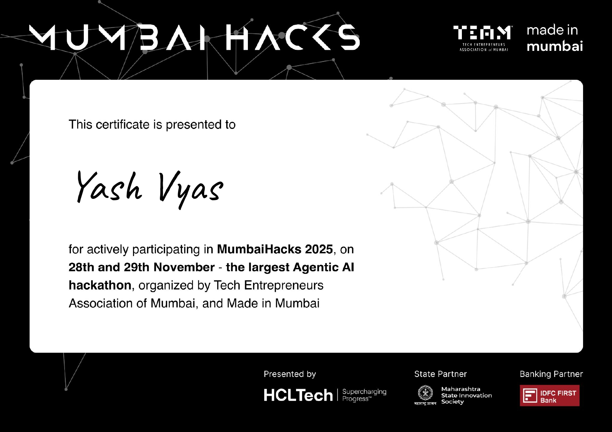
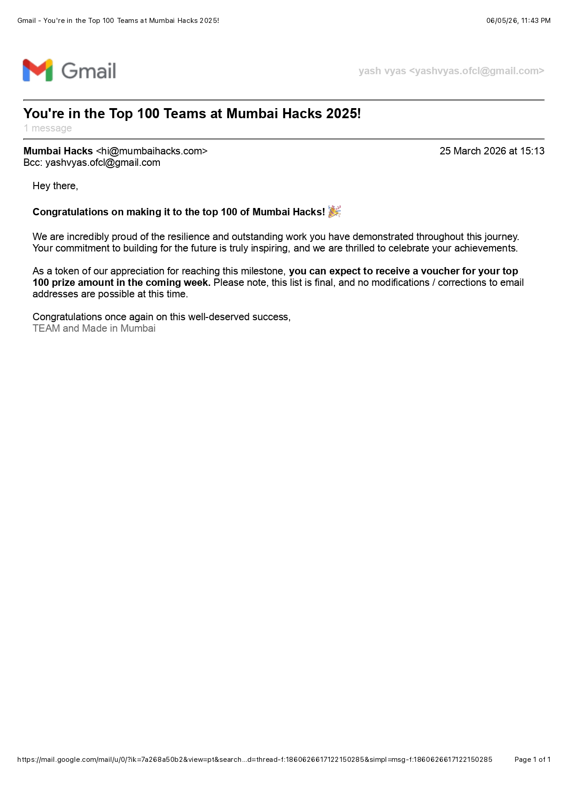
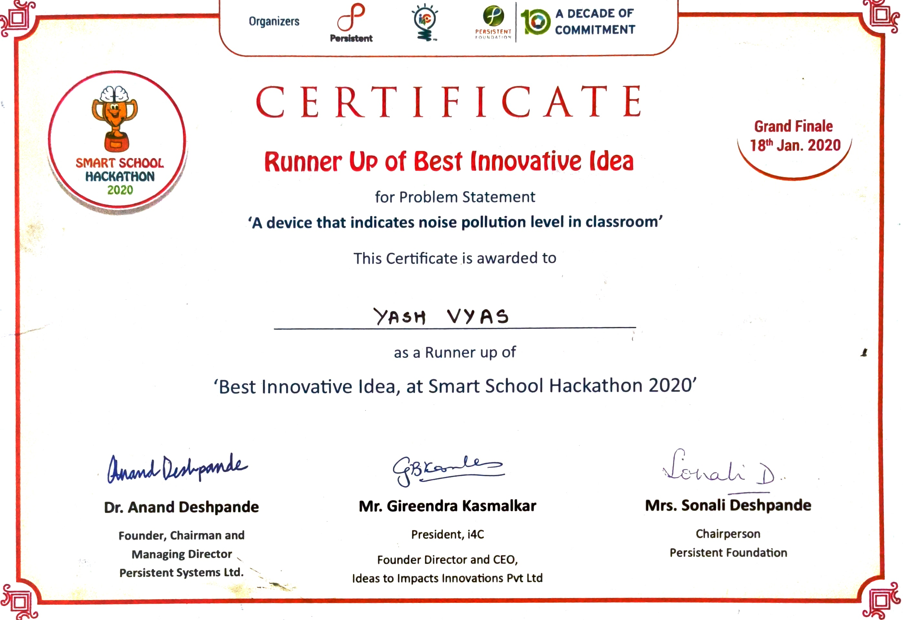
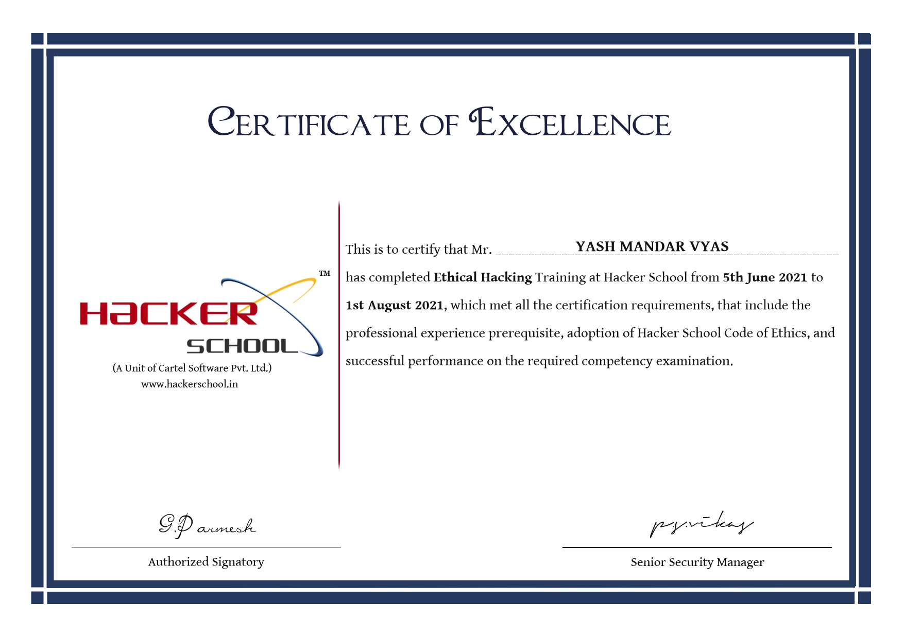
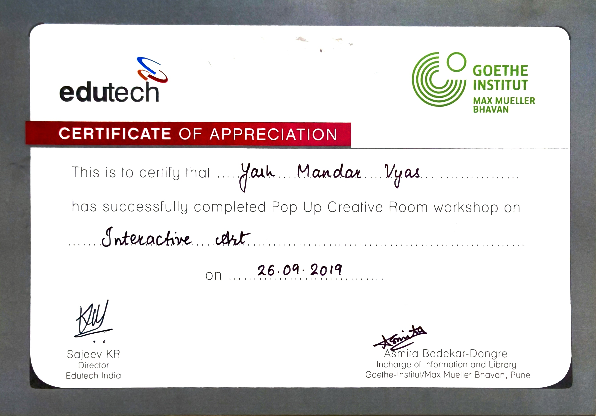
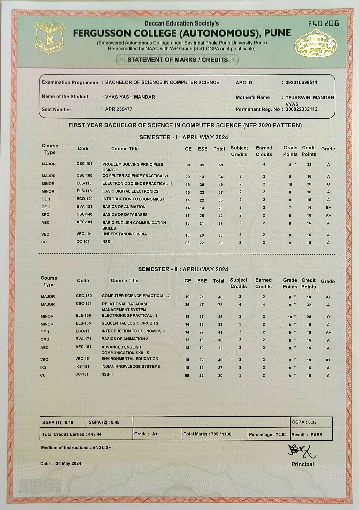
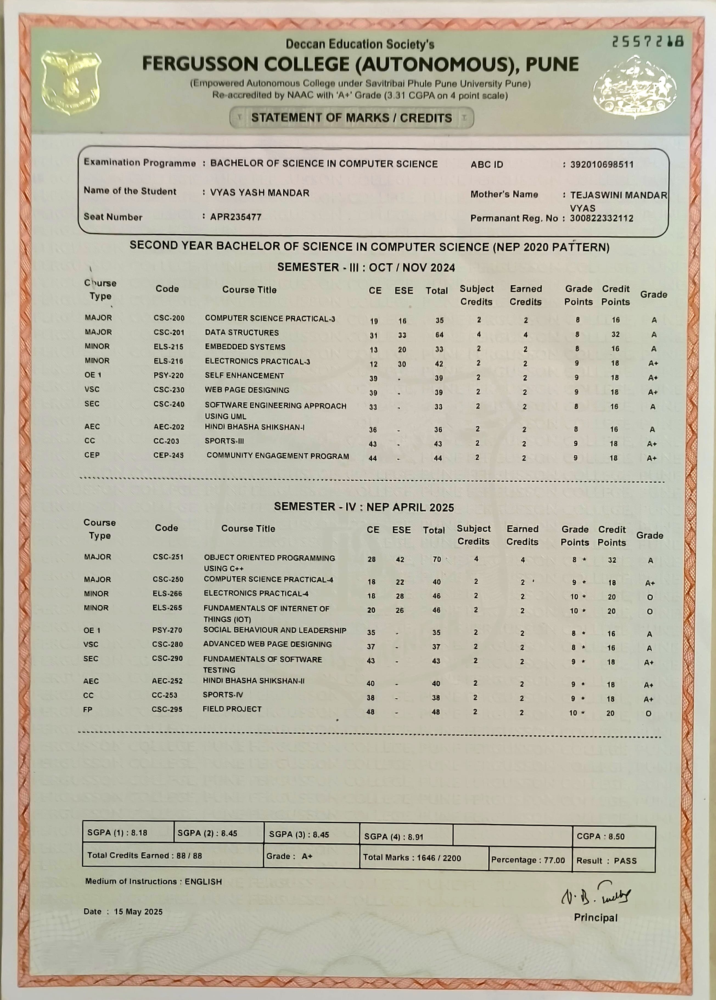
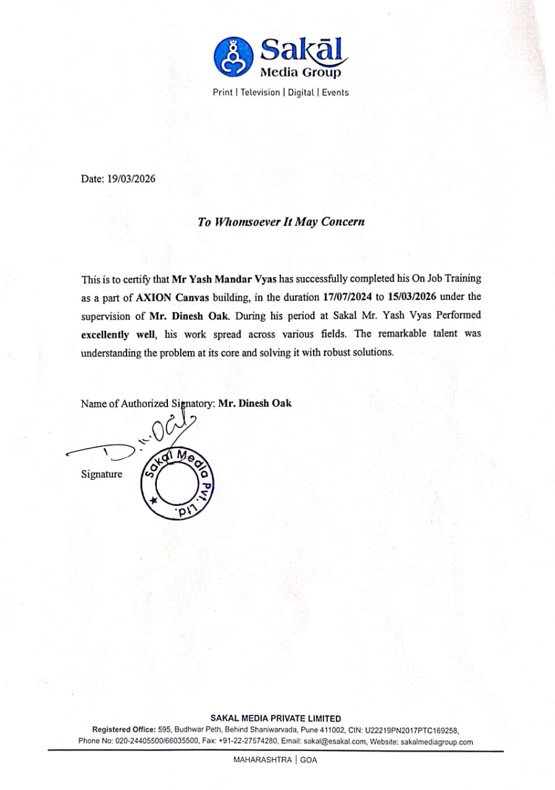

I’ve been building things — IoT, core electronics, software — since I was nine, and I haven’t stopped.
Now I train reinforcement-learning agents, fine-tune LLMs, and read papers on the side. Wherever I go — I learn, I solve, I deploy.
I — Who I am
The short answer
I’m an inquisitive person. I want to know how things work, and once I do, I want to make them better.
That curiosity started early. I was nine when I started messing with motors, resistors, transistors, and microcontrollers — small core-electronics and IoT builds, just to see what would happen. The first thing I shipped that combined hardware and software was a handwash-dispenser controller using a Arduino, and after that I was hooked on the loop where code makes a physical thing move.
From there: Arduino, Raspberry Pi, networking, ethical hacking (CEH), web development, deployment. Today I’m twenty one, two years into research at Sakal Media, and most of my hours go to machine learning — training models, reading papers, breaking them, trying again.
II — On using AI
Where I stand
I started programming long before AI tools were everywhere. I’ve shipped production APIs, built rendering engines, deployed to AWS, and debugged distributed systems on my own. That foundation is real and I’m not going to pretend otherwise.
Today I do use AI — deliberately. I use it to understand new architectures faster, to pressure-test my designs, and to write code at speed once I know what I’m building. The architecture, the trade-offs, the “what should this even be” — that’s still me.
I’m saying this plainly because most of what gets called “vibe-coded” doesn’t survive review. What I ship survives review.
IV — Projects
Things I’ve built
PyTorch · Hugging Face TRL · GRPO · Qwen-0.5B · OpenEnv · FastAPI · Docker
A reinforcement-learning environment that teaches an LLM to design like a human — iteratively diagnose, edit, refine.
The project I’m proudest of. An LLM agent looks at a poster, finds what’s wrong with it, picks an edit, and learns through verifiable reward. Not a one-shot generator. Not a template-picker. An agent that learns the workflow of design.
The hard part was the reward. A flat reward teaches nothing. I built a 7-metric verifiable scoring function with delta-aware, phase-aware shaping — so the agent gets a non-flat learning signal across long-horizon episodes:
U(L) = Σ λk gk(L) for k = 1…7, gk(L) ∈ [0,1]
Composite quality score — seven independent, interpretable signals.
Trained Qwen-0.5B through heuristic-planner → SFT (LoRA) → GRPO. Pushed the model from 0→100% valid actions, +8.5% instruction-fit, and −83% premature finalize.
Selected to the Top 100 of 52,000+ developers at the Meta × PyTorch × Hugging Face OpenEnv Hackathon Grand Finale, Bangalore.
nnUNet v2 · vtk.js · React · Vite · Node.js · Gemini · NiBabel · SimpleITK
An MRI scan, in 3D, in a browser, with an AI radiologist on tap.
An MRI takes time to interpret. The traditional workflow involves heavy desktop software and limited collaboration. We turned MRI scans into interactive 3D brain visualizations that open from a secure link — no install, just a browser.
Under the hood: nnUNet v2 for 3D brain-tumor segmentation, NiBabel + SimpleITK for NIfTI medical imaging I/O, vtk.js for in-browser volume rendering, and a Gemini-powered chatbot that answers patient-history queries and writes clinical summaries on demand. Top 100 of 20,000+ teams at MumbaiHacks 2025.
YOLOv8 · Ultralytics · OpenCV · FastAPI · Telegram Bot API
Real-time leopard detection on a live camera feed, with instant Telegram alerts to forest-boundary residents.
Human–wildlife conflict is rising in regions near forests. Manual CCTV is slow and tired eyes miss things. I built a system that watches a video feed, detects leopards with a fine-tuned YOLOv8 model (confidence threshold 0.7), draws a bounding box on a web dashboard, and pushes a snapshot to a Telegram channel for villagers and forest officers — with cooldown logic so they aren’t spammed.
Built for forest boundaries, villages, farms, and surveillance posts. Future work: multi-animal detection and IoT-alarm integration.
dlib · OpenCV · YOLO · Python
A face-detection-and-recognition pipeline combining classical (dlib, OpenCV) and modern (YOLO) approaches.
A from-scratch exploration of the face-detection & recognition stack. Used dlib for landmark detection and 128-D embeddings, OpenCV for capture and pre-processing, and YOLO for fast bounding-box detection on full frames. Good place to learn where classical CV ends and modern detection begins.
scikit-learn · Pandas · NumPy · Matplotlib · Seaborn · SciPy
Classical machine-learning pipeline on the PIMA Indians Diabetes dataset — 768 records, 8 features, one binary outcome.
Full data-science walk-through: EDA, statistical hypothesis testing, missing-value handling on disguised zeros (insulin, BMI, blood pressure), feature scaling, model comparison across logistic regression / random forest / gradient boosting / SVM, and threshold tuning around precision/recall trade-offs that actually matter for medical screening.
TypeScript · WebGL · Skia · Custom Font Engine
A from-scratch 2D rendering engine, in the browser, for newspapers.
Most newsrooms use the same DTP software they used in 2005. AXION Canvas is the alternative: a programmatic canvas on Skia + WebGL with a custom font engine, where a newspaper page can be drawn, edited, and exported by either a designer or a machine. The hard parts: glyph rendering, kerning tables, color spaces, and the entire pipeline an editor has to handle.
YOLOv8 · CNNs · GANs · Python · PyTorch
The ML side of the Sakal newspaper-automation work — detection plus generation.
Fine-tuned YOLOv8 on a custom newspaper dataset to detect headlines, photos, captions, and ad blocks; built the labeling pipeline, augmentation strategy, and evaluation harness end to end. Prototyped CNN and GAN models for full-page layout generation conditioned on article length, image count, and template constraints. Built the data pipeline that feeds it all: parsers, OCR-style text extraction, dataset versioning.
Flutter · Dart · SQLite · Firebase · Edge Detection · perfect_freehand
A clinic-management app for urology & nephrology, with handwritten consultation notes and intelligent document capture.
Production-grade Flutter app for a specialized practice. Dual-specialty data isolation, multi-layer auth (16-digit access code plus a per-specialty SHA-256-hashed PIN, stored in Keychain / Keystore), and a 5-page consultation form doctors can hand-write on with smooth, pressure-aware strokes. The CV side: real-time edge detection, perspective correction, interactive cropping, and WebP compression cutting file sizes by ~60%. Offline-first SQLite with hash-based incremental backup to Firebase Storage.
Flutter · Express · TypeScript · Prisma · MySQL · JWT
A meter-reading app for utility-company field technicians, with role-based access and one-click PDF/Excel export.
Replaces paper-and-pen meter readings with a digital pipeline: KWH, KVARH, KVAH, and time-of-day tariff segments captured via a validated form, deduped per branch per day, synced to MySQL through Prisma. PDF/Excel export with one click. Quietly saves utility companies thousands of admin hours.
Next.js · Prisma · TypeScript · MySQL · AWS Lightsail · NGINX
A scalable storefront with admin dashboard, microservices architecture, end-to-end deployment.
A freelance build before Sakal. End-to-end: storefront, admin dashboard, microservices, deployed on AWS Lightsail behind NGINX with a custom domain. The point of including this isn’t the e-commerce — it’s where I learned to ship.
Embedded · Sensor design
The project that won me my first hackathon trophy at age 14.
Persistent Smart School Hackathon, 2020. Problem: a device that indicates noise-pollution level in a classroom. Mine took home Runner-Up, Best Innovative Idea. The loop of sense → threshold → respond is essentially what I’m still doing in software, just at a different scale.
VI — Honors & certificates
Things on the wall
2026 · OpenEnv Hackathon · Bangalore
Top 100 of 52,000+ developers
Meta × PyTorch × Hugging Face Grand Finale, Scaler School of Technology. Shipped DesignGym 2.0.
2025 · MumbaiHacks · Mumbai
Top 100 of 20,000+ teams
India’s largest Agentic AI hackathon, organized by HCLTech and Tech Entrepreneurs Association of Mumbai. Shipped 3D-Mind.
2020 · Persistent Foundation · Pune
Runner-Up, Best Innovative Idea
Persistent Smart School Hackathon Grand Finale. Embedded classroom noise sensor. Age 14.
2021 · Hacker School
Certificate of Excellence in Ethical Hacking
Eight weeks. Learned how systems break.
2018 & 2019 · IndiaFIRST Robotics
RoboCHAMP Pro Engineer (A+) & Jr. Champion Engineer (A+)
2018 & 2019 · Government of Maharashtra
Drawing — Elementary (B), Intermediate (A)
Composition turned out to matter for an RL environment about layouts.

OpenEnv · Top 100

MumbaiHacks 2025

MumbaiHacks · Top 100

Persistent SSH · Runner-Up

Hacker School · CoE

Edutech · 2019

FY · Marksheet

SY · Marksheet

Internship · Sakal Media Group